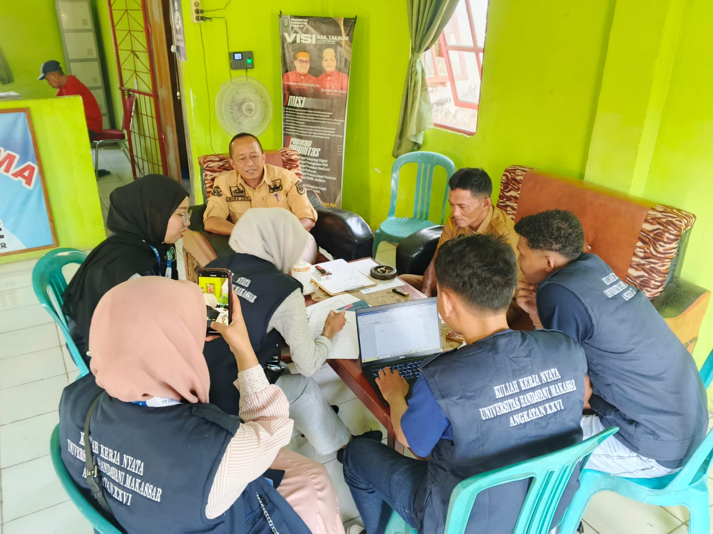
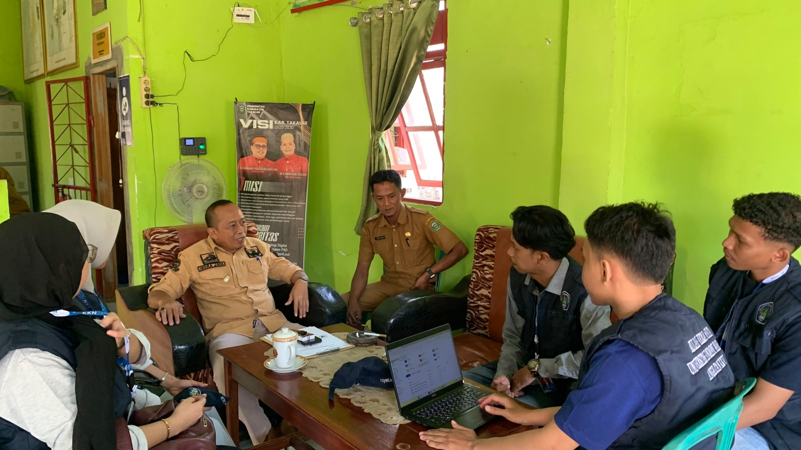

Kegiatan observasi dan wawancara oleh Tim KKN 26 Posko 4 di kantor kelurahan
Tim mahasiswa Kuliah Kerja Nyata (KKN) Angkatan 26 Posko 4 Universitas Handayani Makassar mengadakan sesi observasi dan wawancara secara langsung dengan Bapak Lurah Mattompodalle. Kegiatan ini merupakan bagian penting dari tahap observasi awal untuk menggali informasi lebih mendalam mengenai kondisi sosial, ekonomi, serta infrastruktur yang ada di kelurahan ini.
Tujuan Observasi dan Wawancara
Tujuan utama dari pertemuan ini adalah untuk menyelaraskan rencana program kerja (Proker) yang telah didiskusikan sebelumnya dengan kebutuhan nyata masyarakat setempat. Melalui wawancara ini, kami mendapatkan banyak masukan, saran, serta arahan langsung dari pemerintah kelurahan agar program yang dijalankan nantinya benar-benar bermanfaat dan tepat sasaran bagi warga.
"Sinergi antara mahasiswa KKN dan pemerintah kelurahan sangatlah penting. Kami menyambut baik semangat adik-adik mahasiswa dan siap mendukung penuh setiap program kerja positif yang akan dilaksanakan di Mattompodalle." — Lurah Mattompodalle
Harapan Kedepannya
Berdasarkan data dan informasi yang diperoleh dari sesi observasi ini, tim Posko 4 akan segera melakukan finalisasi penyusunan program kerja. Diharapkan kolaborasi erat dengan pihak kelurahan dapat terus terjalin dengan baik hingga masa pengabdian KKN berakhir, sehingga dapat membawa dampak positif bagi kemajuan desa.
Dokumentasi Kegiatan

Suasana diskusi bersama perangkat kelurahan

Sesi tanya jawab dan pertukaran informasi

Pemetaan kebutuhan program kerja bersama pihak desa